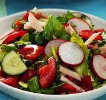

Fresh Garden Salad

Ingredients:
- 1 cucumber
- 2 tomatoes
- 1/2 red onion
- 1 bell pepper
- Lettuce or mixed greens
- 2 tbsp olive oil
- 1 tbsp lemon juice
- Salt and pepper to taste
Instructions:
- Wash and chop all vegetables.
- Combine in a large bowl.
- In a small bowl, mix olive oil, lemon juice, salt, and pepper.
- Drizzle the dressing over the salad and toss well.
- Serve fresh and enjoy!
more recipes
to up
to home